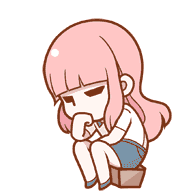

Means-Ends Analysis (MEA)
Advanced Artificial Intelligence Problem Solving Technique.
1. The Theory & Algorithm
What is Means-Ends Analysis?
- Definition: Means-Ends Analysis is a problem-solving technique that focuses on reducing the difference between the current state and the goal state.
- Instead of searching through all possible actions, MEA selects actions that appear to bring the agent closer to the goal.
- Means: Available actions
- Ends: Desired goal
- Difference: Gap between current state and goal state
Why Use Means-Ends Analysis?
- Helps reduce search space
- Useful when the problem space is too large for brute-force search
- Works well in heuristic-based planning
Means-Ends Analysis Strategy
- Search strategies either reason forward or backward.
- Mixed strategy - solve the major parts of problem first and solve the smaller problems that arise when combining them together.
- The means-ends analysis process centers around finding the difference between current state and goal state.
Steps in Means-Ends Analysis
- Compare current state and goal state
- Identify differences
- Select an operator (action) to reduce the most significant difference
- If the operator has preconditions, apply MEA recursively to achieve those
- Apply the operator to transition to the new state
- Repeat until the goal is reached
Algorithm Means-Ends Analysis
Step 1: Compare CURRENT to GOAL, if there are no differences between both then return Success and Exit.
Step 2: Else, select the most significant difference and reduce it by doing the following steps until the success or failure occurs.
- Select a new operator O which is applicable for the current difference, and if there is no such operator, then signal failure.
- Attempt to apply operator O to CURRENT. Make a description of two states.
- i)
O-Start, a state in which O's preconditions are satisfied. - ii)
O-Result, the state that would result if O were applied in O-start.
- i)
- If
(First-Part <------ MEA (CURRENT, O-START))
And
(LAST-Part <------ MEA (O-Result, GOAL))
are successful, then signal Success and return the result of combining FIRST-PART, O, and LAST-PART.
2. Means-Ends Analysis Example
- Apply MEA to get the goal state.
- Solution:
- To solve the above problem, first find the differences between initial states and goal states, and for each difference, generate a new state and will apply the operators. The operators we have for this problem are:
- Move
- Delete
- Expand
3. Interactive Simulator
Execute the operators manually to transition through the states physically.
> Ready.
4. Interactive Simulator: The Block World Problem
A classic MEA problem. Goal: Stack 'A' on 'B', but Pre-conditions block the action.
> Initialize Environment...
5. Interactive Simulator: The Laptop Purchase
Using sub-goaling (finding the address via Phone) to satisfy the condition of knowing the shop's location before executing the Purchase operator.
> Task Assigned: Buy Laptop
6. Problem Decomposition
In complex problems, a massive goal is fractured into simpler, manageable sub-goals. If a tool cannot be used yet, the AI pauses, creates a sub-problem to fix the roadblock, and then merges the results back together.
7. Exam Strategy & 3 PYQs
Nov 06
2024

> Computing State Matrix...The MEA process centers around continuous evaluation and relies on the following 6 steps:
- Compare the current state and the goal state.
- Identify the differences between them.
- Select an operator (action) to reduce the most significant difference.
- Precondition Check: If the chosen operator has preconditions that are not currently met, apply MEA recursively to achieve those preconditions first.
- Apply the operator to transition to the new state.
- Repeat until the goal is successfully reached.
Consider a visual AI transformation task:
- Initial State: A circle containing a square, plus a small dot on the outside.
- Goal State: An empty circle with a diamond on the outside.
- Operators Available: Move, Delete, Expand.
- Step 1: The AI evaluates the initial state and identifies the first difference (the extra dot). It applies the Delete operator.
- Step 2: The AI evaluates the new state. The square is inside the circle, but it needs to be outside. It applies the Move operator.
- Step 3: The AI evaluates the new state. The shape is currently a square, but the goal requires a diamond. It applies the Expand operator to transform the shape, successfully reaching the Goal State.
Jul 13
2023
Means-Ends Analysis (MEA) is a problem-solving technique that focuses on reducing the difference between the current state and the goal state. Instead of searching through all possible actions, MEA selects specific actions (operators) that appear to bring the agent closer to the goal. It utilizes a mixed strategy of both forward and backward reasoning to solve major parts of a problem first.
2. The MEA Steps:- Compare current state and goal state.
- Identify differences.
- Select an operator (action) to reduce the most significant difference.
- If the operator has preconditions, apply MEA recursively to achieve those first.
- Apply the operator to transition to the new state.
- Repeat until the goal is reached.
The Block World is a classical AI planning problem used in robotics.
- Start State: Block A is on the table, and Block B is on the table. The robotic arm is empty.
- Goal State: Block A needs to be stacked on top of Block B (On(A, B)).
- Step 1 (Difference): The AI sees Block A is not on Block B.
- Step 2 (Operator Selection): It selects the operator Stack(A, B).
- Step 3 (Precondition Check): To use Stack(A,B), the preconditions are Holding(A) and Clear(B). The AI is not currently holding A, so the precondition fails.
- Step 4 (Recursive Sub-Goal): The AI creates a sub-goal to achieve Holding(A) by selecting the Pickup(A) operator.
- Step 5 (Check & Execute): The preconditions for Pickup(A) are Arm Empty, On(A, Table), and Clear(A). Since these are met in the Start State, the AI successfully executes Pickup(A), and then immediately executes Stack(A, B) to reach the goal.
May 14
2024
The "Blocks World" is a classic AI problem where a robotic arm must rearrange blocks on a table to match a specific goal shape. Means-Ends Analysis (MEA) solves this by constantly looking at the difference between the "Current State" and the "Goal State" and picking an action to fix it.
2. The Rules (States & Operators):
To solve the problem, the AI uses four specific actions (Operators): Pickup, Putdown, Stack, and Unstack.
However, every action has strict Pre-conditions (rules that must be true first). For example, the robot arm cannot pick up a block if another block is sitting on top of it (the block must be "Clear").
Imagine Block A and Block B are sitting separately on the table, and the Goal is to stack A on top of B.
- Step 1: The AI sees the difference and decides to use the Stack(A, B) action.
- Step 2 (The Roadblock): To stack A, the precondition says the arm must be holding Block A. But the arm is currently empty, so the action is blocked.
- Step 3 (Sub-Goal): MEA pauses the main goal and creates a smaller sub-goal: Get Block A into the arm.
- Step 4 (Resolution): The AI selects the Pickup(A) action. Since A is clear on the table, this works!
- Step 5: Now that the arm is holding A, the original precondition is met. The AI successfully executes Stack(A, B) and reaches the goal.
8. Interactive Pop-Quiz
Question Text
MEA
MEA is much simpler: it just looks at the biggest obstacle in front of it and picks a tool to smash it. It doesn't care about the perfect path, only about reducing the immediate difference.
A* Search
A* Search calculates the exact mathematical cost of every single step to find the absolute shortest path.